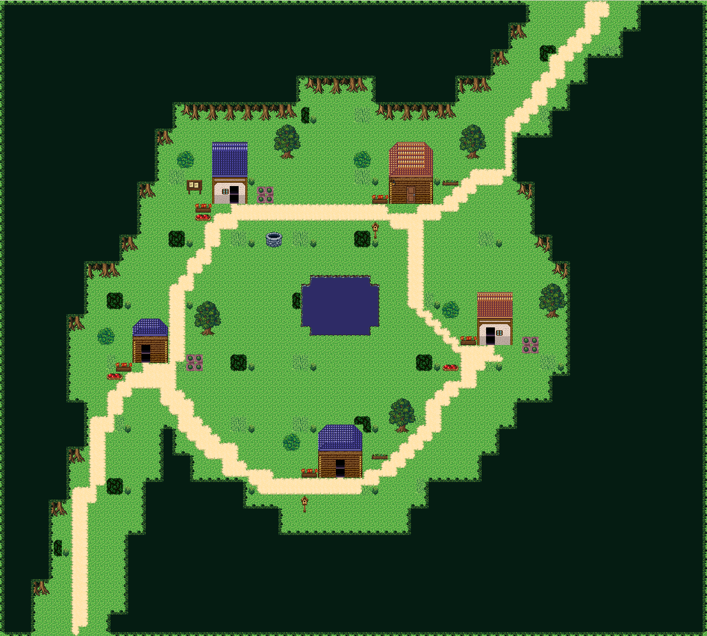
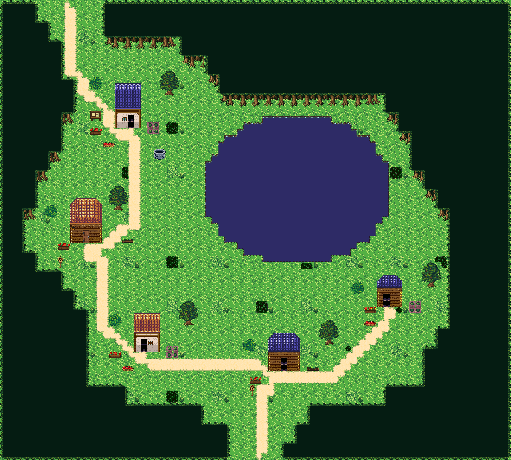
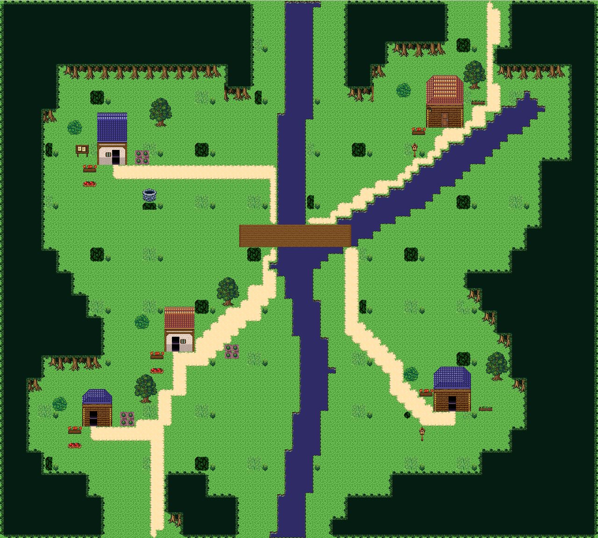
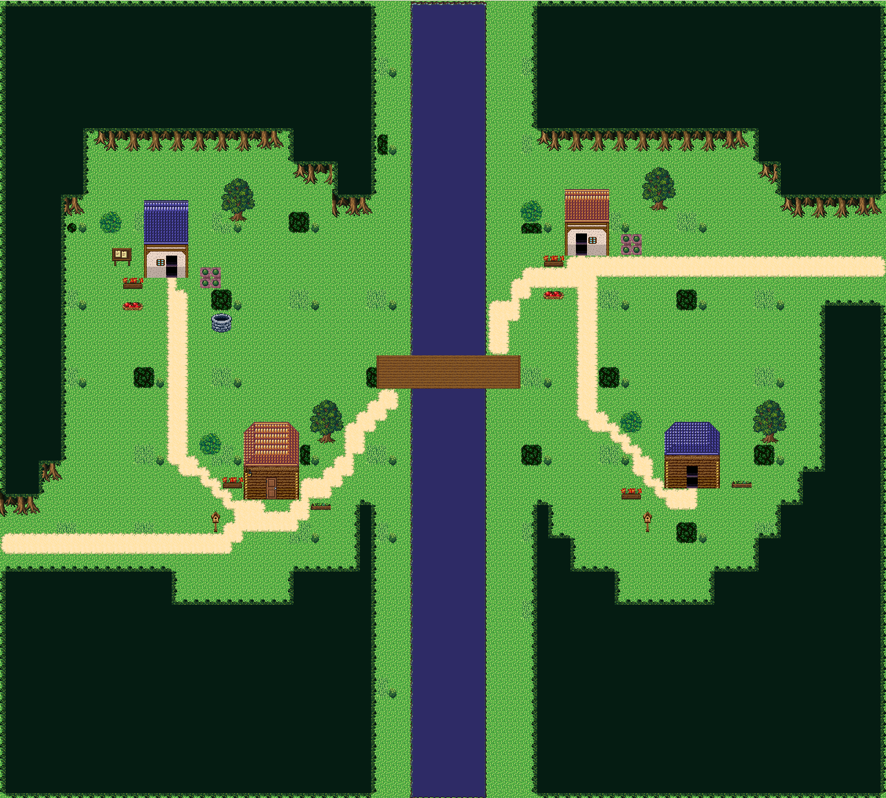
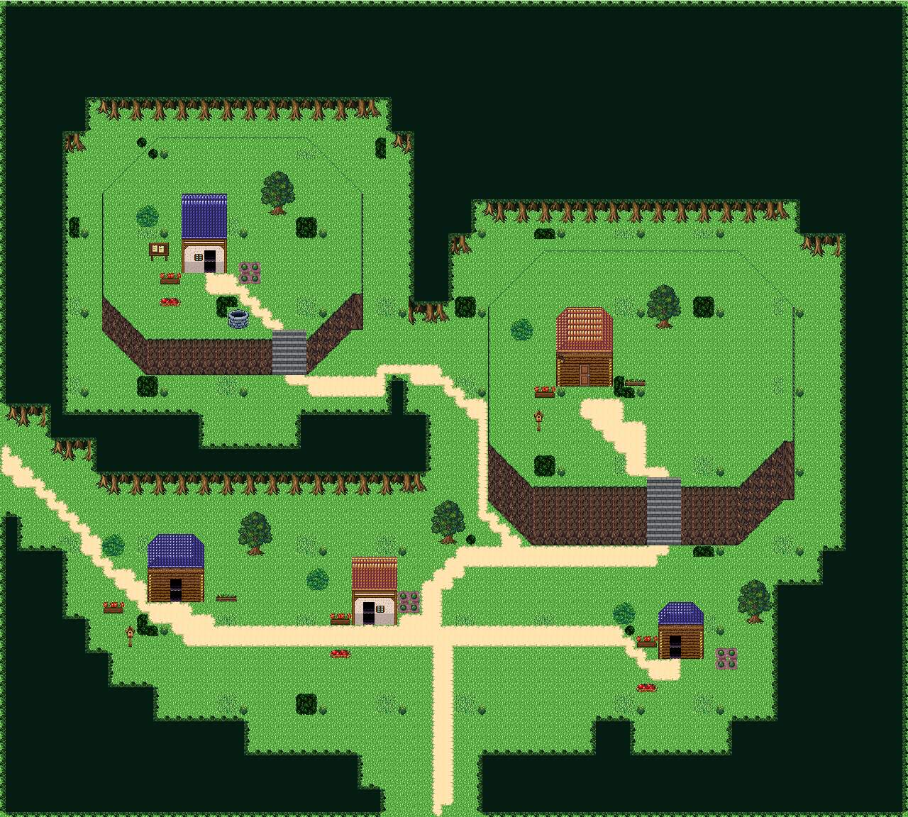
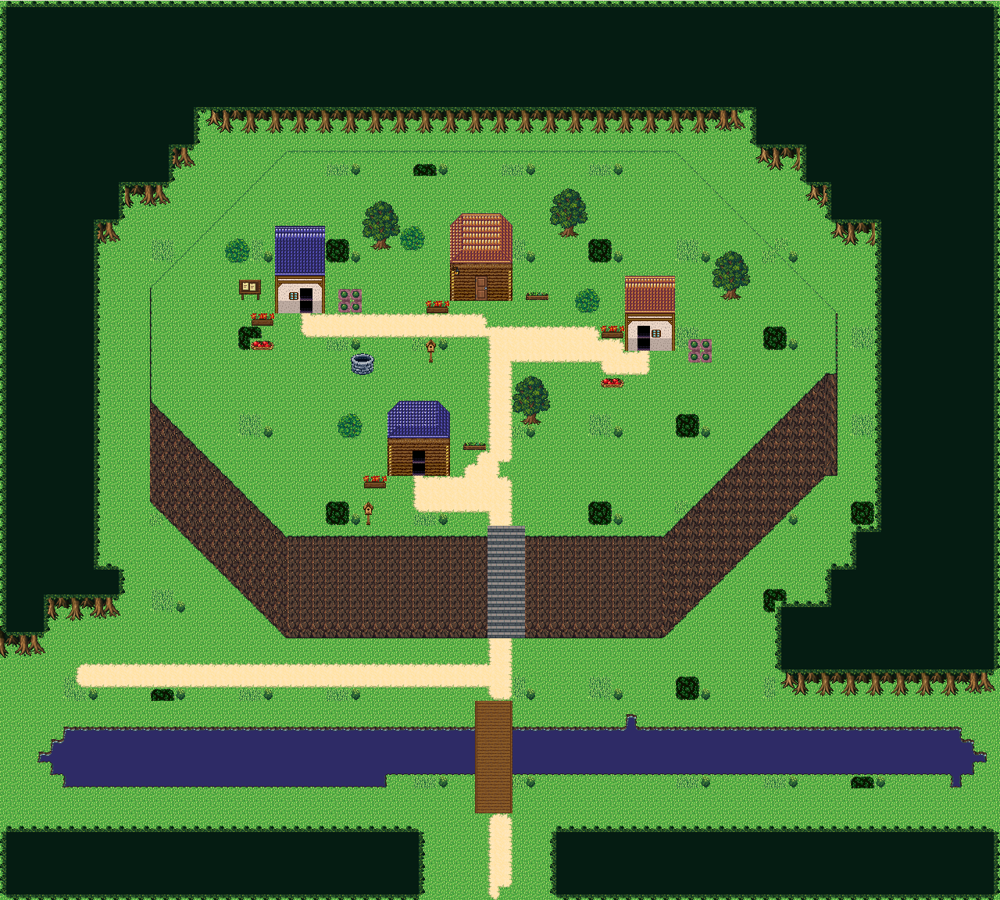
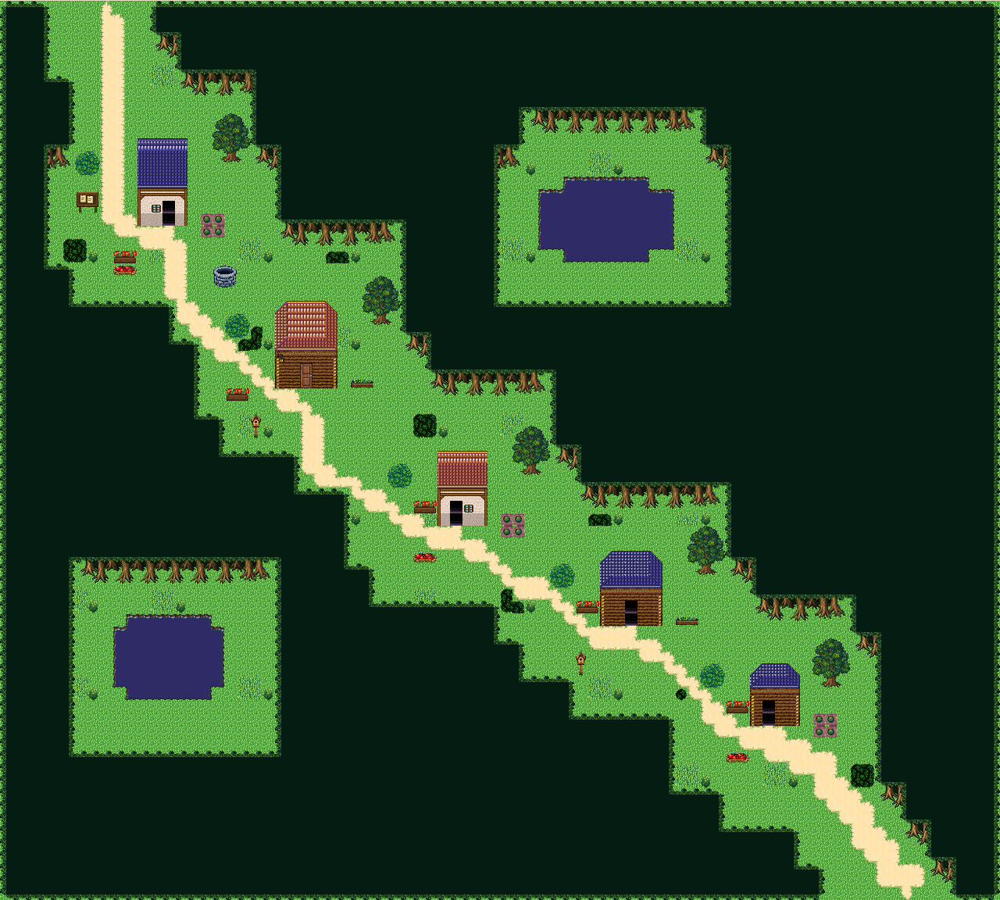
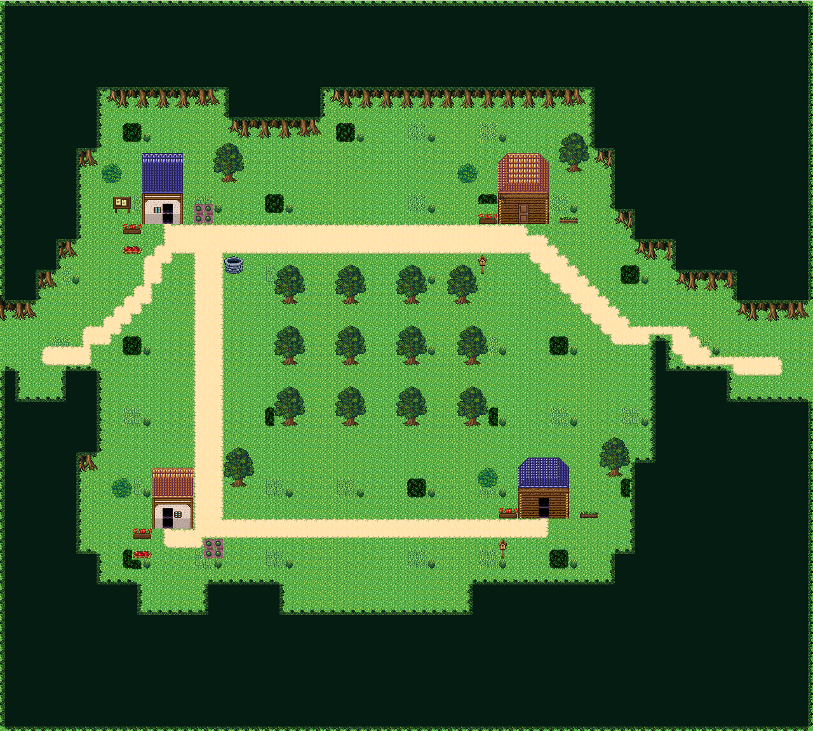
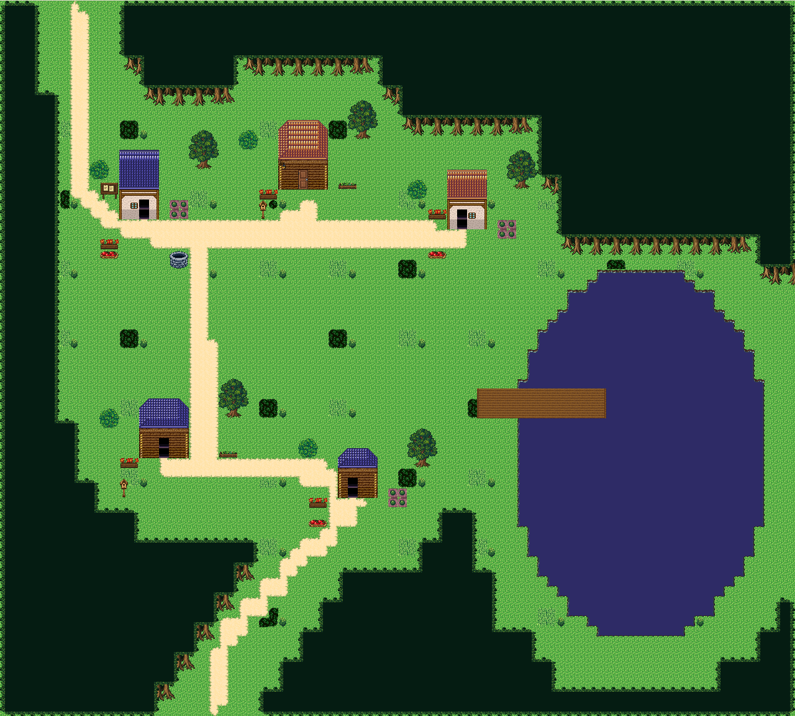
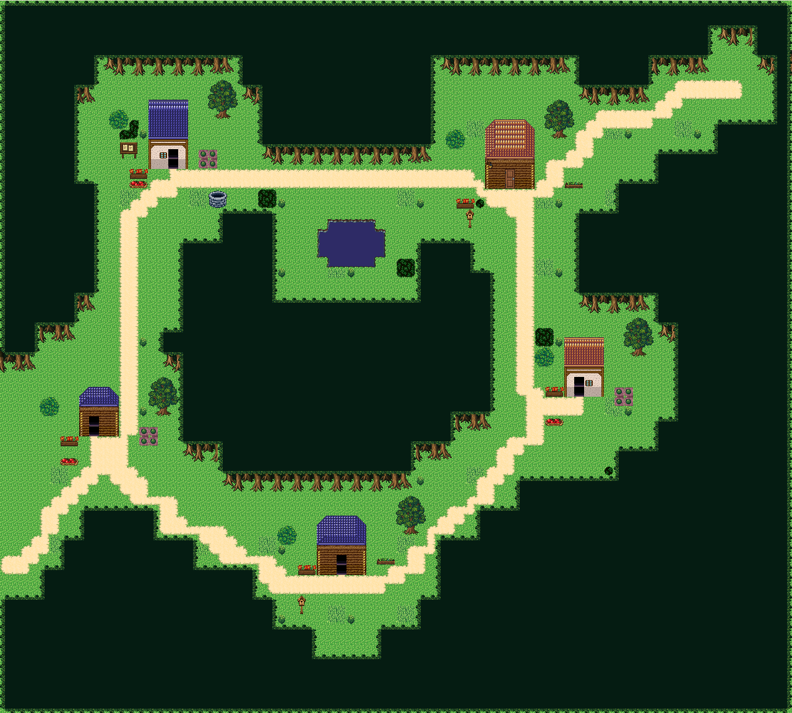

1. 01 · 샘고리 마을
중앙 샘을 두르는 고리 길

80×72칸 · 16px 타일 · 사용자 검수 대기. 이미지를 누르면 원본 크기로 열립니다.
중앙 샘을 두르는 고리 길

호수 서쪽과 남쪽을 감싸는 초승달 취락

갈라지는 시냇물과 다리

강 양쪽의 두 취락을 하나의 다리로 연결

높이가 다른 두 언덕과 아래쪽 마당

대각 절벽 위의 고원과 강 건너 진입로

대각으로 굽어 내려가는 한 줄기 오솔길

과수원 둘레를 도는 마당과 생활 공간

호숫가 작업터와 짧은 나무 선착장

큰 숲 덩어리 주위로 이어지는 다섯 빈터
